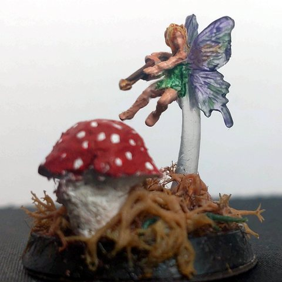

Embla
📜 Ouvrir la fiche de personnage (Google Sheets)


- Race / classe : fée, vagabonde des forêts du monde
- Alignement : loyal bon
- Tenue : robe, baguette magique, fleurs dans les cheveux
Sorts
- Transformer un champignon en champignon géant qui marche et obéit (coût 3, 20 min)
- Illusion mineure : petites lumières dansantes, voix, faux bruits de pas (coût 1, 5 min)
- Porte dimensionnelle : passer par un petit portail (arbre creux, cercle de champignons) (coût 6)
- Rêve : entrer dans le sommeil de quelqu'un, comme figure lumineuse ou cauchemar
- Soin de 8 PV (coût 1)
Background
- Née dans un cocon de chenille, dans une forêt des Cinq Vallées.
- Objectif : rencontrer d'autres fées pour sauver la nature ensemble.
Ce qu'on sait (résumé des sessions)
- Dans le volcan Kiriadum, a créé un champignon géant qui a combattu les gobelins avec les héros.
- Après le Kiriadum, elle a disparu.